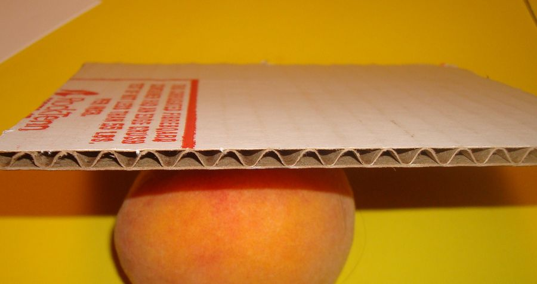
- Start the spider's body. Cut out a 4-5 inch square of cardboard from a discarded grocery box. It must be corrugated cardboard. Hold it so the small holes in the lining of the cardboard are going from side to side.
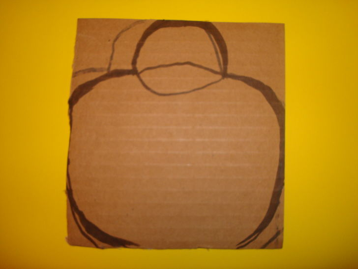
- Draw, on the cardboard, a circle for the body. Draw a smaller circle at the top for the spider's head. Go all the way to the edges of the cardboard to maximize the space and give you a large spider.
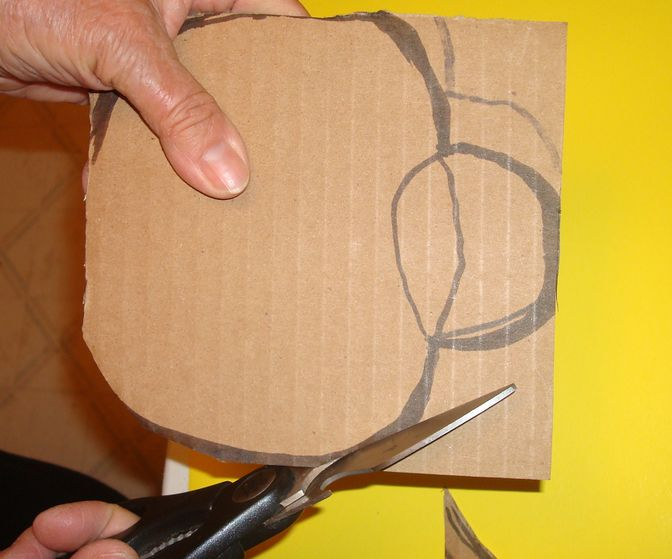
- Cut it out. Ordinary household scissors work fine.
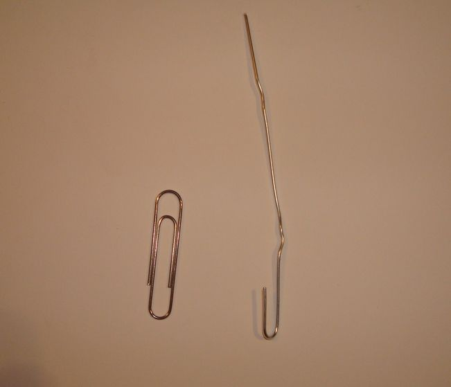
- Create the hanger. strong Use a large paper clip that you have bent into a flat shape. Bend one end straight, form a hooked shape.
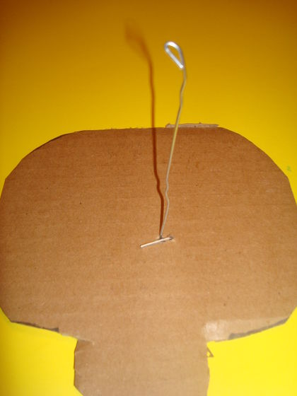
- Poke this clip through the center of the body. Tape it on the front and back using masking tape.
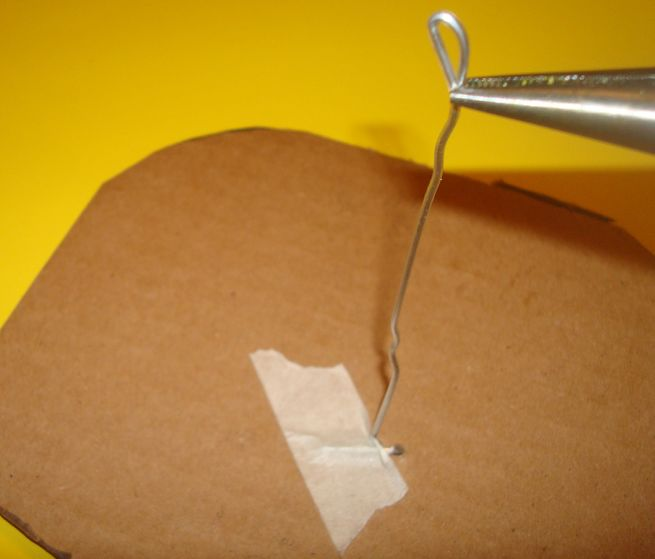
- Create a loop for hanging. Use a needle nose pliers to bend the wire at of the top.
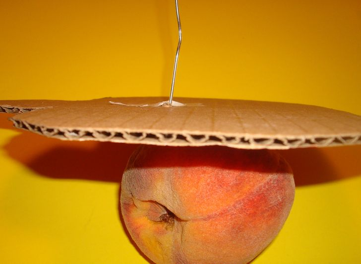
- Double check to see that the holes inside the cardboard are going from side to side across the body. You will use these holes to secure the legs.
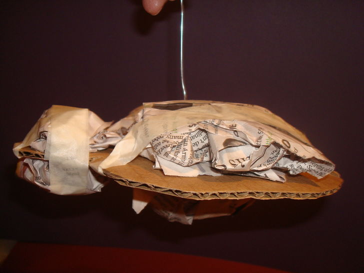
- Fatten the body and head on both sides. Wad up small pieces of newspaper and tape the pads to the top and bottom of the spider using long strips of masking tape.
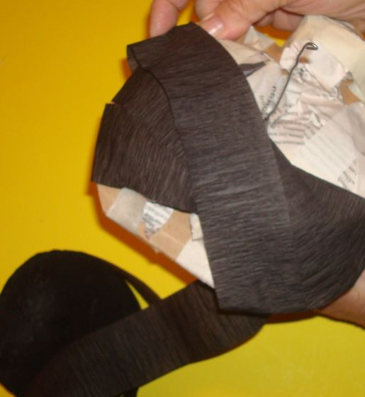
- Cover the spider entirely in black crepe paper streamers. Criss-cross the crepe paper as you work. Stretch the streamers slightly as you wrap to make it conform to the rounded edges of the head and body. At the end, finish by gluing the strip with tacky glue.
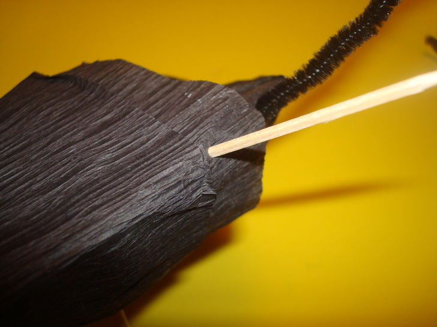
- Locate the holes for the legs. Use a toothpick to find them.
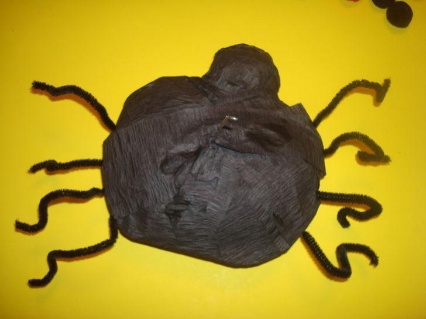
- Insert the legs. Go in the holes you made with the toothpick, sticking half a black craft stem or fuzzy pipe cleaner into the hole. It will stay, but to be extra sure, you can dip the end of the pipe cleaner into tacky glue.
- Insert the legs. Go in the holes you made with the toothpick, sticking half a black craft stem or fuzzy pipe cleaner into the hole. It will stay, but to be extra sure, you can dip the end of the pipe cleaner into tacky glue.
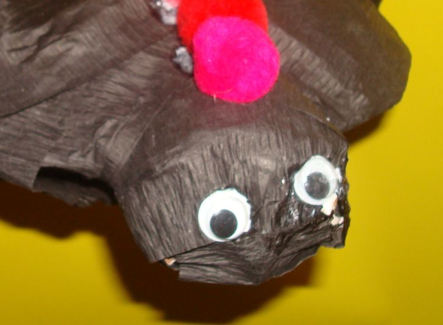
- Make the spider's face. Use tacky glue to place googly eyes. If you want a mouth, cut a tiny sliver of white paper and glue it in place.
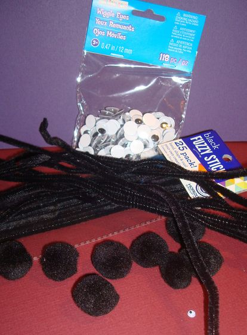
- Decorate the spider with colorful craft balls. Be creative and embellish this spider as much as you wish.
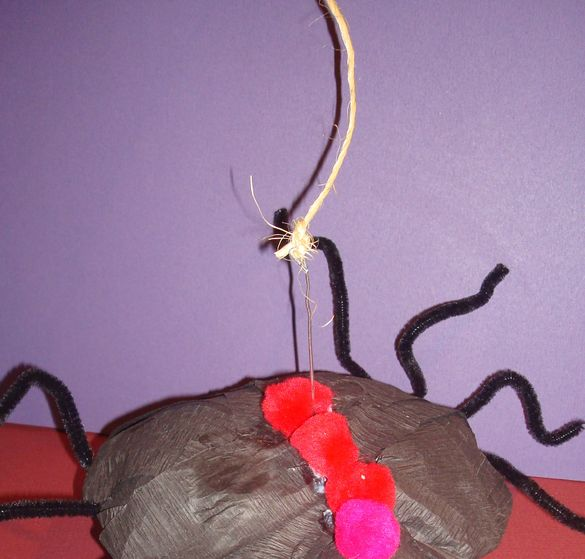
- Run a piece of twine through the hole in the paper clip hanger. Knot it securely.
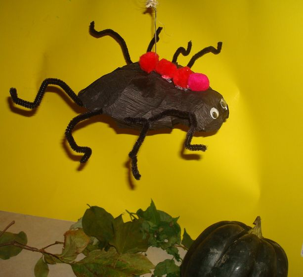
- Hang your spider in a window or at the top of a doorway. This will be a chilling surprise for visitors.